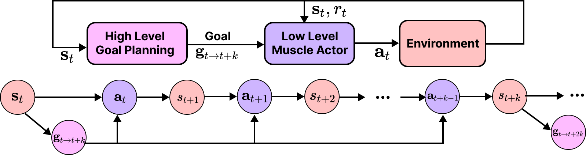
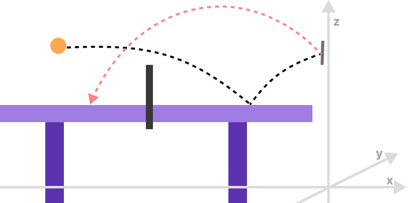
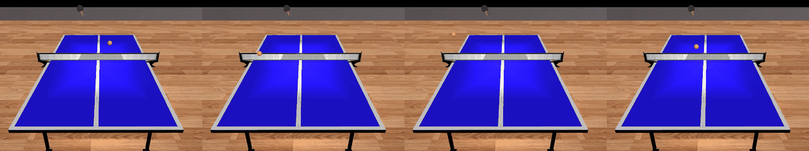
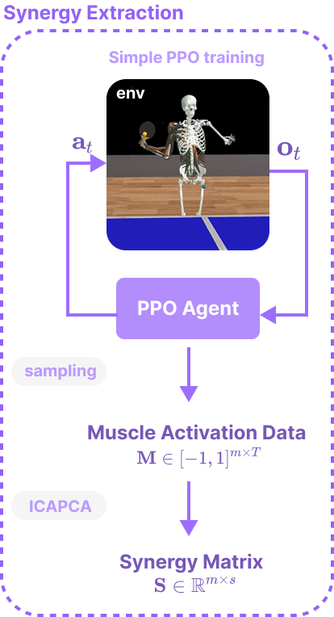
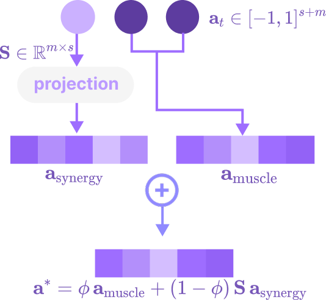
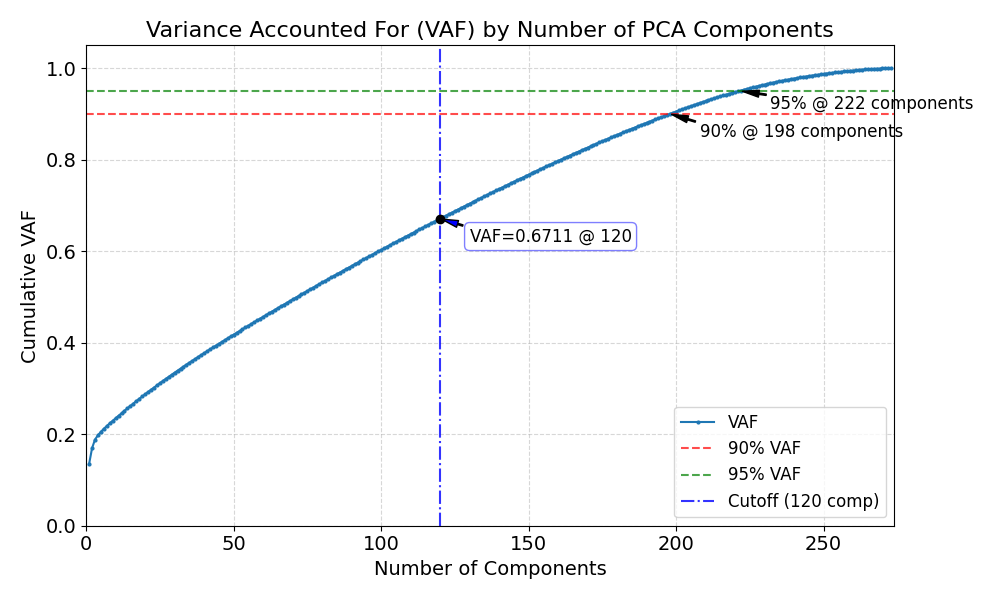
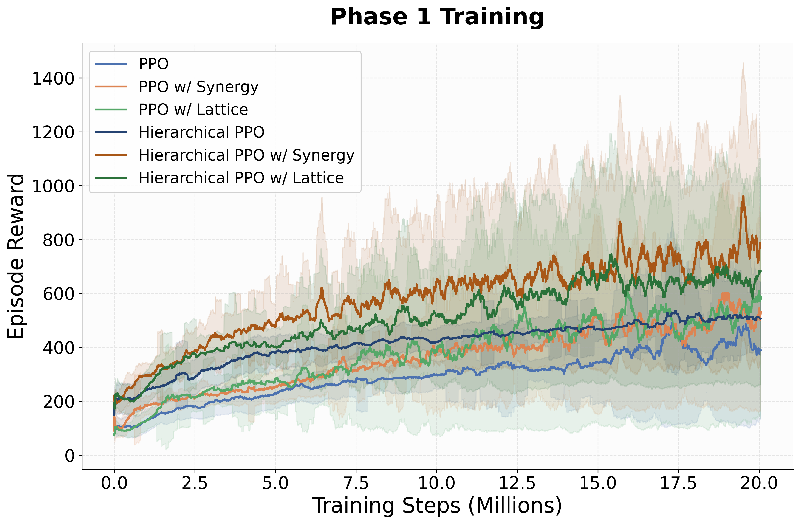
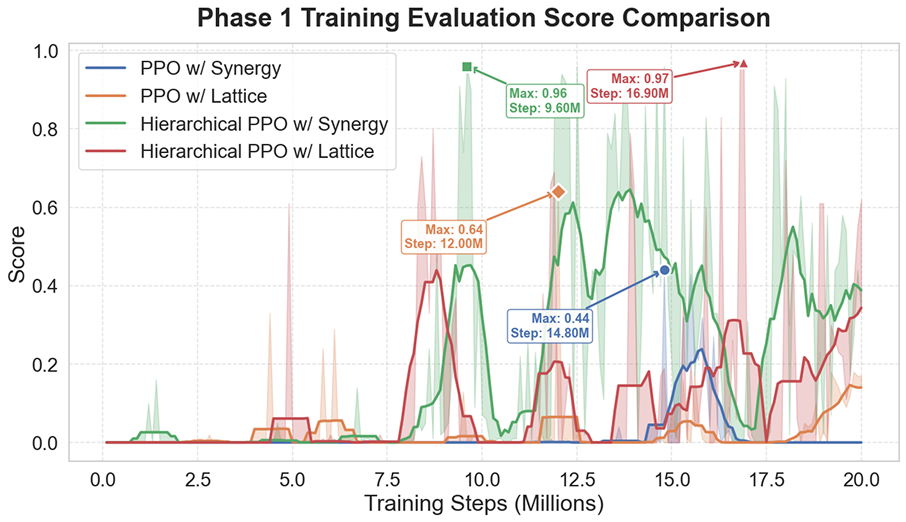
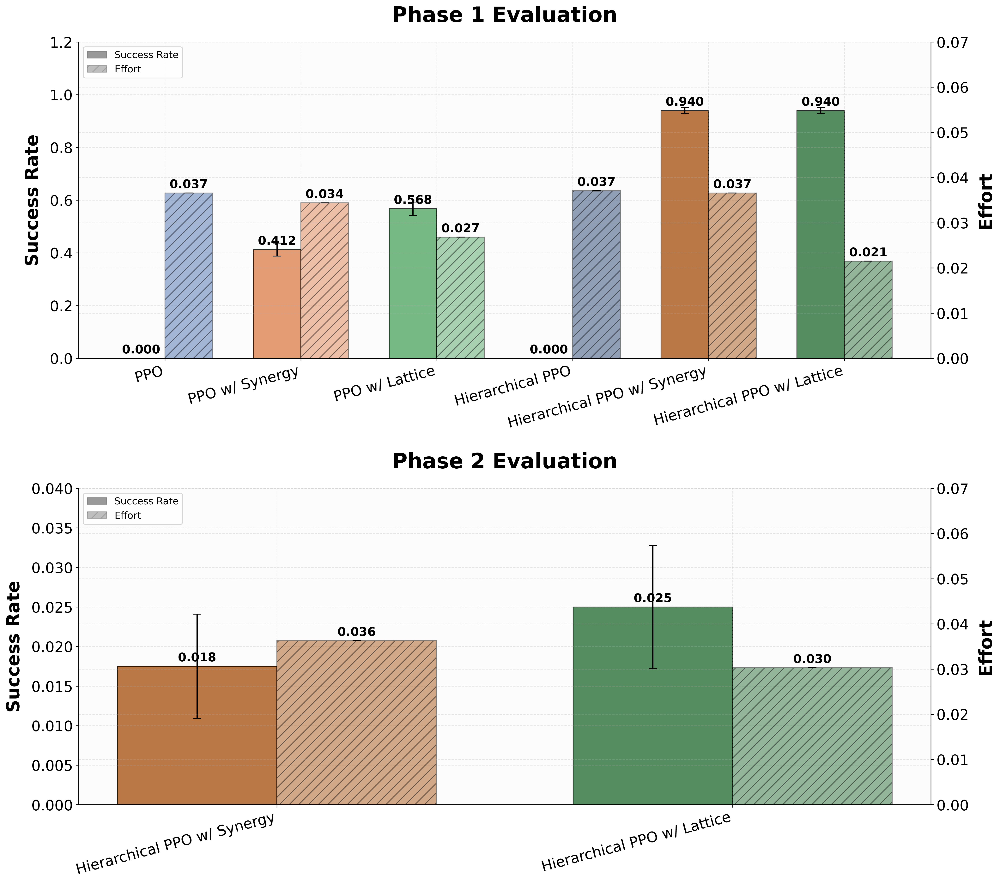
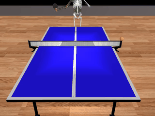

Abstract
Controlling bio-inspired musculoskeletal systems (MSK) remains a significant challenge in robotics due to their high dimensionality, overactuated nature, and the sparse rewards typical of complex tasks like table tennis. We introduces MyoPong, a framework designed to tackle the MyoChallenge Table-Tennis task using a musculoskeletal model (myoArm and myoTorso) with up to 210 muscles. To overcome the challenges of sparse rewards and high dimensionality, the system combines a training-free, physics-based high-level planner with a low-level PPO actor integrated with muscle synergy extraction and latent exploration (the Lattice method). Experimental results show that while standard PPO baselines fail completely, the proposed hierarchical architecture achieves a near-optimal 94% success rate. The findings demonstrate that combining hierarchical structures with inductive biases in the action and exploration spaces is essential for mastering musculoskeletal control, with the Lattice-based approach emerging as the most energy-efficient solution for balancing task success and minimal control effort.
Musculoskeletal Control: Challenges and Opportunities
High Dimensionality
The myoArm (63 muscles) and myoTorso (210 muscles) create a massive action space that is difficult to explore efficiently.
Overactuated System
Redundant muscle groups (overactuation) require complex coordination to achieve stable movements.
Sparse Rewards
Table tennis tasks offer few rewards until a successful return is made, hindering standard RL progress.
The MyoChallenge Table-Tennis task (MyoSuite [1]) serves as our primary motivation, requiring an agent to control a musculoskeletal model to consistently return ping-pong balls launched at varying velocities and positions.
Solutions
Goal-Conditioned Hierarchical Model

Our framework utilizes a hierarchical architecture to decouple complex task strategy from low-level muscle control. The high-level policy focuses on "where" and "how" the paddle should hit the ball, while the low-level policy focuses on "how" the muscles should move to reach that goal.
- High-Level: Physics-based trajectory planning.
- Low-Level: Goal-conditioned PPO agent.
- Communication: Paddle target state updated every k steps.
Model-based High Level Policy
The training-free High-Level Policy (HLP) guides the agent using analytical ball kinematics. By predicting the ball's trajectory, the HLP calculates the optimal paddle position and orientation target required for a successful return.
Trajectory Prediction
Impact time is determined by the distance to the paddle's X-plane:
Z-velocity considers the ball bouncing with table elasticity \(e\):
Collision position is predicted considering gravity and table height:
Orientation Control
The optimal normal vector \( \mathbf{n} \) is the unit bisector between the incoming ball direction \( \mathbf{d}_{in} \) and the desired return direction \( \mathbf{d}_{out} \) to the target \( \mathbf{T} \).

High-Level Policy Validation
The physics-based high-level planner was tested in isolation in a simplified 6-DOF paddle control environment to verify the reliability of the heuristic policy.
- Controls paddle motion in 6 DOF (position + orientation)
- Adjusts control near impact to reduce jitter

Analytical trajectory prediction for 6-DOF paddle targets
Extracting Muscle Synergy
Inspired by biological motor control, we extract dominant co-activation patterns (synergies) to stabilize the agent. By reducing the effective action space, the agent can focus on functional movements rather than individual muscle activations.
We use 120 synergies which explain > 60% of muscle activations from our muscle activations sample.
Methodology (SAR [2])
Play Phase
Simple PPO training with 275 action space. Collect muscle activation trajectories and apply PCA+ICA to produce the most important synergies.
Training Phase
Train the model using a combined synergy and muscle action space for more stable control.

Decomposition of muscle activation trajectories into functional synergies via PCA and ICA.

Integration of synergies into the low-level action space with $\phi = 0.8$

Variance Accounted For (VAF) across different numbers of synergies
Optimizing Exploration Space
- Standard Gaussian noise is insufficient for high-dimensional MSK control.
- Following the success of Lattice method in MyoChallenge 2023 [3], we integrate generalized time-correlated noise for structured exploration in our PPO training.
- Unlike conventional PPO, which applies independent Gaussian noise to each action dimension, Lattice introduces correlated noise across both action and latent spaces, with a learnable noise covariance that captures inter-dimensional dependencies.
- The noise is sampled once every T timesteps, promoting temporally coherent exploration.
Lattice Noise Model
Stuctured Action
Noise Distributions
Experimental Results
Learning Curves

Training Step Rewards: Baseline PPO fails to learn, while hierarchical models show rapid convergence.

Evaluation Success Rate: Hierarchical variants consistently reach ~94% success early in training.
Phase 1 Performance Analysis

Comparison of Success Rate vs. Control Effort across all models
Complete failure - cannot learn effective policy in high-dimensional space.
Significant improvement - action space reduction helps stabilization.
Superior to synergy - structured exploration is more effective for MSK.
Near-optimal performance with hierarchical architecture.
Best balance of performance and energy efficiency.
Model Performance Samples
Non-Hierarchical Policies
PPO
PPO + Synergy

PPO + Lattice
Hierarchical Policies (Proposed)
H-PPO
H-PPO + Synergy
H-PPO + Lattice
Discussion & Findings
Synergy Action and Latent Exploration improves baseline PPO
Augmenting the action space with Muscle Synergy stabilizes the agent by reducing the action space, enabling the agent to achieve a success rate of 40% compared to baseline PPO of 0%. Implementing Latent exploration improves the model more significantly, achieving a 56% success rate.
Hierarchical Architecture with Synergy or Latent Exploration Achieves Near-Optimal Results
The proposed Hierarchical PPO architecture consistently outperforms standard PPO baselines on both synergy and latent exploration models, achieving a ~94% success rate compared to only 40%–60% for non-hierarchical variants. In contrast, hierarchical architectures without any optimization of the action or exploration space fail to achieve successful results.
Latent Exploration Reduces Control Effort
While both hierarchical methods achieve high success, the Lattice approach is the most efficient solution; it matches the top-tier performance of Synergy but requires significantly less control effort.
Key Findings
- Inductive Bias: Integrating inductive bias directly into the action and exploration spaces (Synergy [2] & Lattice [3]) significantly enhances performance when mastering complex, over-actuated musculoskeletal systems.
- Hierarchy: Optimized action or exploration spaces are required for the hierarchical architecture to function effectively.
- Lattice Method: Offers the best balance of task success and minimal control effort (Lattice [3]).
Limitations
Adaptability Challenges
The model currently struggles in Phase 2 environments featuring random ball velocity and friction. This performance gap is primarily attributed to:
- Timing mismatches between high and low-level policies
- Insufficient curriculum granularity during training (Curriculum RL [4])
- Constraints in training duration and model scale
Future Directions
Automated HLP Generation
While our current High-Level Policy is manually designed, future work will explore iterative LLM-based self-improvement. In this framework, heuristic policies are generated, evaluated, and refined through a reflection mechanism to achieve more robust and generalized control strategies.
BibTeX Citation
@article{rendy2025myopong,
title={MyoPong: Goal-Conditioned Synergistic Action and Latent Exploration for Musculoskeletal Table Tennis Control with Training-Free High-Level Policy},
author={Rendy, Alfonsus Rodriques and Tjitrahardja, Eduardus and Prasetya, Valentino},
journal={Tsinghua University Advanced Machine Learning Symposium Fall 2025},
year={2025},
url={https://github.com/alfonsusrr/MyoPong}
}